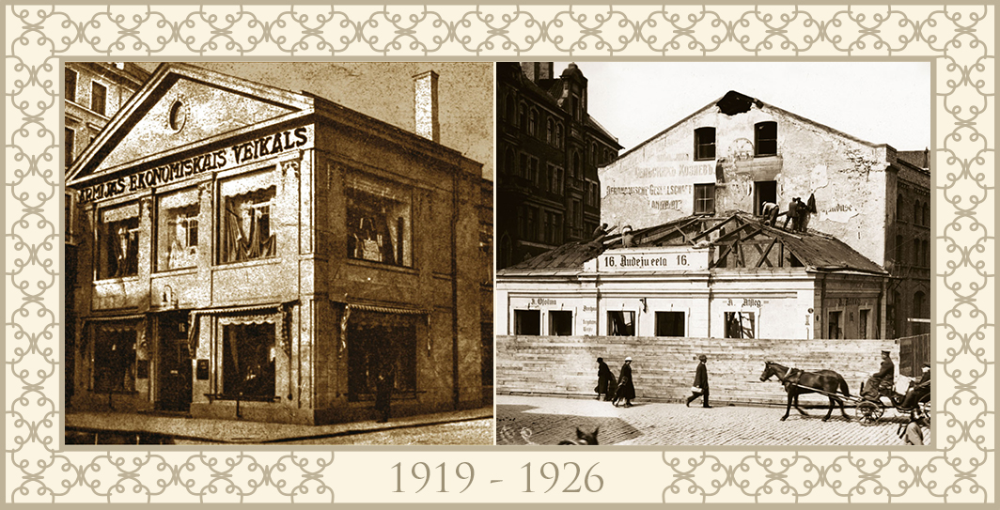
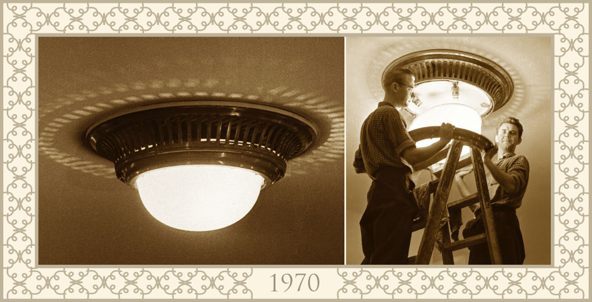
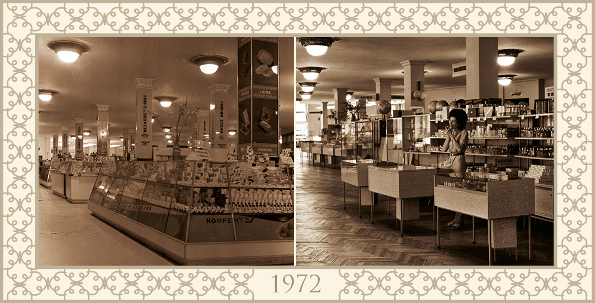
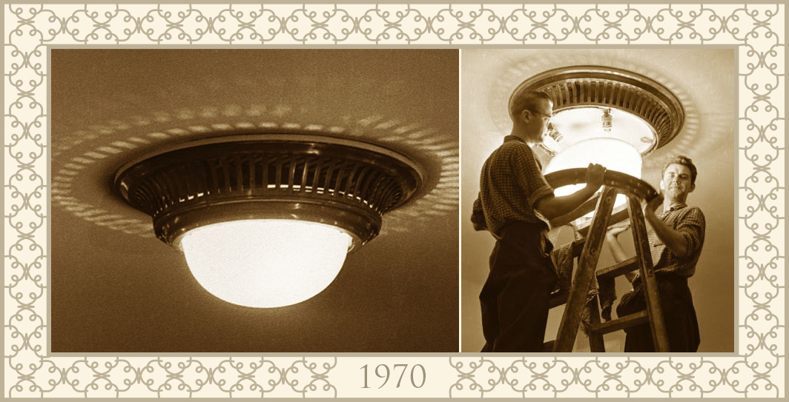
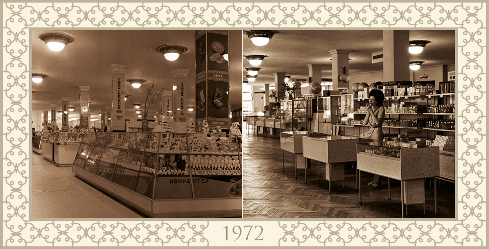
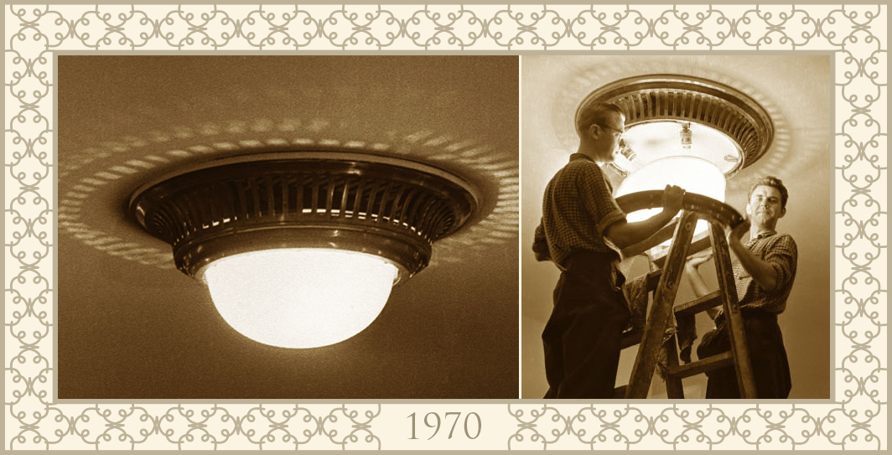
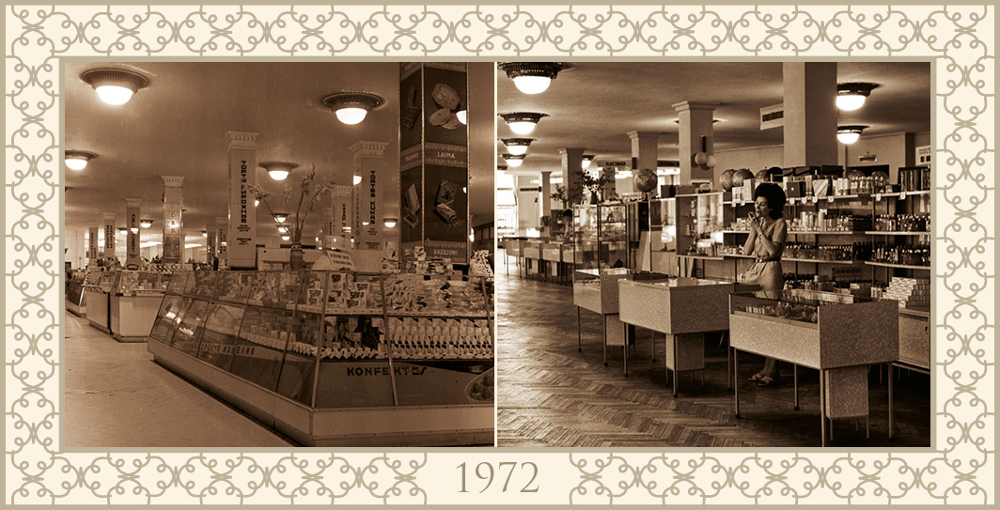

 






The Old Town holds centuries of history. Since the time when Riga was one of the most active Hanseatic trading points, Old Town has been an enticing selling and buying ‘mecca’ for many both Rigans and visitors. In the Art Nouveau gem, Riga’s fashion and sophisticated lifestyle has long been esteemed. It is difficult to imagine the Old Town without elegance conferred to it by the shopping mall, GALERIJA CENTRS, which opened in 1938.
One can get acquainted with the broader presentation of the GALERIJA CENTRS history right in the shopping mall — in the photo exhibition dedicated especially to the GALERIJA CENTRS history, which is on display in the historic stairway. The exhibition is devoted to the creation history and development of GALERIJA CENTRS starting from the Army Economy Store and longstanding department store “Centrs” until today. It is praised by both Latvian history and culture experts and state officials — Minister of Culture Zaneta Jaunzeme-Grende, Minister of Economy Daniels Pavluts and Head of the “Riga 2014” Foundation Diana Civle.
Within four floors of the mall one can see 63 significant photo fixations from the 73 years long history of GALERIJA CENTRS that so far were hidden in the personal and national archives. The exhibition features photos starting from the foundation stone laying attended by the President and Prime Minister of Latvia Karlis Ulmanis and the store architect Arturs Galindoms until today. Allowing to trace GALERIJA CENTRS development through the decades.
The Commercial Director of “Linstow Center Management” Trade Centres Evija Majevska said: “This is a unique project, created by GALERIJA CENTRS in collaboration with museums, foundations and archives of Latvia. GALERIJA CENTRS is a historically significant building, several times internationally recognised as an outstanding design object and one of the most successful shopping centres in Europe. Therefore it is especially important to us that along with the development of the building its historical legacy is honoured, too.”